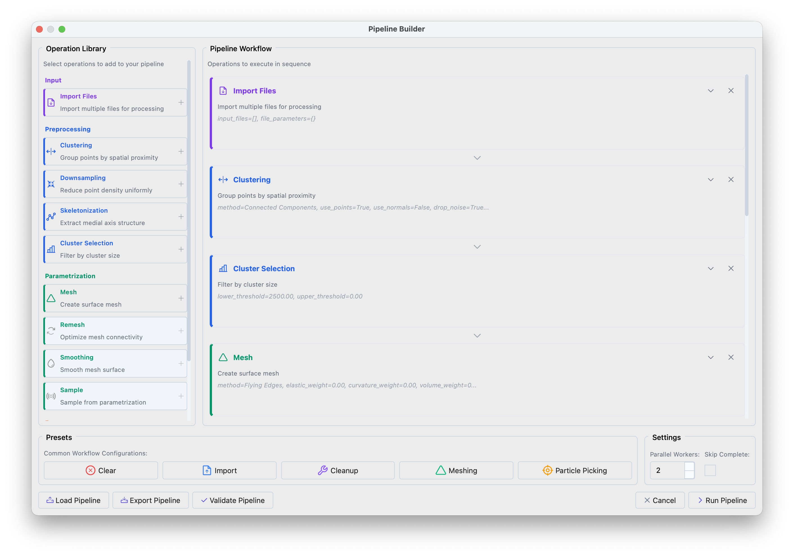
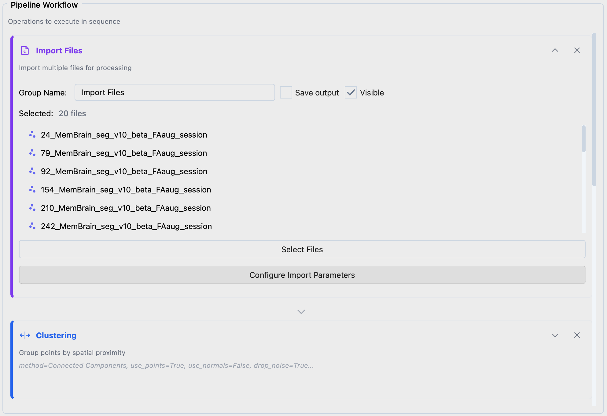
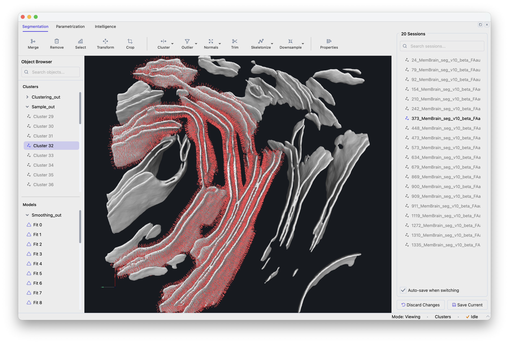

Batch Processing#
This tutorial demonstrates how to build reproducible pipelines that process entire cryo-ET datasets automatically. Starting from membrane segmentations, we generate seed points for constrained template matching.
Note
Batch processing is available from version 1.1.0.
Requirements#
Install Mosaic according to the installation instructions.
This tutorial assumes voxel-level membrane segmentations are available, with one file per tomogram:
segmentations/
├── tomo_001_seg.mrc
├── tomo_002_seg.mrc
├── ...
└── tomo_100_seg.mrc
Creating a Processing Pipeline#
Open the Pipeline Builder via File > Batch Processing (or Ctrl+Shift+P).
{kind=link}

Pipeline Builder interface showing the operation library (left) and workflow panel (right).#
Click the Particle Picking preset in the bottom panel to load a standard workflow. The preset performs:
Clustering — separates the segmentation into distinct membrane compartments
Filtering — removes small fragments (segmentation artifacts)
Meshing + Smoothing — creates a smooth triangular surface
Sampling — places evenly-spaced points with surface normals along the membrane
Configuring Input Files#
Expand Import Files, click Select Files to choose your segmentations. Use Configure Import Parameters if file headers need correction.
{kind=link}

Import Files configuration.#
Choosing Parameters#
Clustering
Separates membranes (plasma membrane, ER, mitochondria, etc.) that should be processed independently.
Method: Connected Components — identifies spatially separated regions
Distance: -1.0 — single-voxel connectivity
Cluster Selection
Removes small clusters based on point count. The threshold depends on pixel size: at 7 Å/px use 2000–8000; at 14 Å/px use 500–1000. Inspect a few segmentations to calibrate.
Mesh
Converts the point cloud into a triangular surface.
Method: Flying Edges — fast, works well for dense volumes
Flying Edges extracts the segmentation contour, producing a closed surface with seed points on both sides of the membrane. Alternative methods (see the Meshing preset) fit a surface through the segmentation center, producing single-sided normals — useful when you want to restrict template matching to one side.
Remesh and Smoothing
Reduces voxel-level noise in the mesh. Without smoothing, surface normals are noisy and do not represent the true membrane orientation.
Method: Taubin — preserves shape while reducing noise
Iterations: 10
Sample
Places seed points at regular intervals along the surface. Together with surface normals, these constrain template matching to search near the membrane.
Method: Distance — uniform spacing
Sampling: distance in Å between points (30 Å works for most cases)
Offset: distance from the surface toward the protein center (~half the target protein height)
Export Data
Format: STAR for PyTME compatibility
Output Directory: where to save seed point files
Save Session
Saves sessions for review and manual correction in Mosaic.
Execution Settings#
Parallel Workers: files processed simultaneously (~8 GB memory per worker)
Skip Complete: resume interrupted runs by skipping files with existing output
Running the Pipeline#
Click Run Pipeline. Progress is shown in the bottom-right corner. The Batch Navigator opens on completion.
Cluster Execution#
Export the pipeline as pipeline.json via Export Pipeline, then run on an HPC cluster:
# Process all files
mosaic-pipeline pipeline.json --workers 8
# Resume, skipping completed files
mosaic-pipeline pipeline.json --workers 8 --skip-complete
# Preview without executing
mosaic-pipeline pipeline.json --dry-run
SLURM job array example (sbatch run_pipeline.sh):
#!/bin/bash
#SBATCH --job-name=mosaic_batch
#SBATCH --cpus-per-task=2
#SBATCH --mem=12G
#SBATCH --time=01:00:00
#SBATCH --output=logs/mosaic_%A_%a.out
CONFIG="/path/to/pipeline.json"
# Self-submitting: first run determines array size
if [ -z "$SLURM_ARRAY_TASK_ID" ]; then
mkdir -p logs
N_RUNS=$(mosaic-pipeline "$CONFIG" --dry-run | head -1 | grep -oP '\d+')
sbatch --array=0-$((N_RUNS-1)) "$0"
exit 0
fi
mosaic-pipeline "$CONFIG" --index $SLURM_ARRAY_TASK_ID
Reviewing Results#
Open the Batch Navigator via File > Batch Navigator (or Ctrl+Shift+N).
{kind=link}

Batch Navigator showing the session list.#
Click a session to load it. Modifications are auto-saved when switching sessions. Verify that membranes are properly separated, artifacts filtered, meshes smooth, and seed points evenly distributed.
Using Seed Points for Template Matching#
The exported STAR files contain coordinates and surface normals for constrained template matching. In PyTME, configure via Intelligence > Template Matching > Setup with your seed points file and search constraints (rotational uncertainty 15–20°, translational uncertainty 5–10 Å).
See the PyTME documentation for scaling to full datasets.
Pipeline Operations Reference#
Input#
- Import Files
Loads files for batch processing. Supported: sessions (.pickle), point clouds (STAR, XYZ, TSV), meshes (OBJ, STL, PLY), volumes (MRC, EM).
Preprocessing#
- Clustering
Partitions point clouds into spatially coherent groups.
Connected Components: disjoint regions by spatial connectivity
Leiden: graph-based community detection
K-Means: k clusters by within-cluster variance minimization
DBSCAN: density-based clustering
- Downsampling
Reduces point density.
Radius: removes points within a specified radius of each other
- Skeletonization
Extracts the medial axis of tubular structures.
- Cluster Selection
Filters clusters by point count (lower/upper threshold).
Parametrization#
- Mesh
Generates triangular surfaces from point clouds.
Flying Edges: fast isosurface extraction from volumetric data
Poisson: smooth, watertight surfaces (requires consistent normals)
Ball Pivoting: surface reconstruction for partial surfaces
Alpha Shape: generalized convex hull with adjustable detail
- Remesh
Decimation: reduces triangle count while preserving geometry
Subdivision: increases mesh resolution
- Smoothing
Taubin: iterative smoothing without shrinkage
Laplacian: moves vertices toward neighbor centroids (may shrink)
- Sample
Generates point samples from mesh surfaces.
Distance: uniform spacing with surface normals
Points: random uniform samples
Export#
- Export Data
Point clouds (STAR, XYZ, TSV), meshes (OBJ, STL, PLY), volumes (MRC, EM, H5).
- Save Session
Serializes the complete session state.
Troubleshooting#
- Memory errors during parallel execution
Reduce worker count. Each worker needs ~8 GB RAM depending on segmentation size.